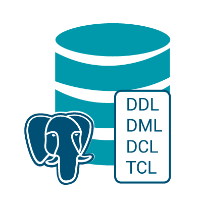

¿Qué es DCL?
DCL (Data Control Language) es un subconjunto de SQL utilizado para definir y gestionar los privilegios de acceso a los datos en una base de datos. DCL permite otorgar y revocar permisos a los usuarios o roles, lo que garantiza que solo los usuarios autorizados puedan ejecutar ciertas operaciones en las bases de datos.
La seguridad en las bases de datos es crucial, y DCL juega un papel vital en la protección de la información y en la administración de roles.
Historia de DCL
El concepto de DCL surgió con el desarrollo de SQL en la década de 1970. DCL formó parte del diseño original de SQL, al integrar comandos para controlar los privilegios de acceso y las acciones que los usuarios pueden realizar sobre los datos. Con el tiempo, SQL se ha adaptado a las necesidades de control más complejas en los sistemas de bases de datos modernos.
¿Para qué sirve DCL?
DCL es fundamental para:
- Seguridad de las bases de datos: Controla el acceso a la información, evitando que usuarios no autorizados realicen operaciones destructivas o no deseadas.
- Gestión de roles: DCL facilita la administración de roles y permisos, garantizando que cada usuario tenga los privilegios adecuados según sus necesidades.
- Auditoría de acceso: Permite seguir y gestionar qué usuarios tienen acceso a qué recursos y cómo interactúan con los datos.
Icono del lenguaje:
Como DCL no tiene un logotipo propio, en algunos recursos se usa el logotipo de SQL, ya que es un subconjunto de este lenguaje.

¿Cómo funciona DCL?
DCL trabaja junto con otros componentes de SQL para gestionar la seguridad y control de acceso:
- GRANT: Utilizado para otorgar permisos de acceso sobre objetos específicos de la base de datos (como tablas, vistas, etc.) a un usuario o rol.
- REVOKE: Utilizado para eliminar o revocar permisos previamente otorgados a usuarios o roles.
Ejemplo de uso:
-- Otorgar permisos de lectura (SELECT) a un usuario
GRANT SELECT ON empleados TO usuario1;
-- Revocar permisos de escritura (INSERT, UPDATE) de un usuario
REVOKE INSERT, UPDATE ON empleados FROM usuario1;
En este ejemplo, el primer comando otorga a "usuario1" permisos de lectura sobre la tabla "empleados", mientras que el segundo revoca los permisos de escritura sobre la misma tabla.
La base de DCL:
La seguridad y la gestión de permisos se aplica a todas las operaciones dentro de una base de datos. Por ejemplo, un administrador puede otorgar permisos a usuarios específicos para ejecutar consultas, actualizar registros o eliminar datos según los requerimientos de la organización.

¿Qué se necesita para trabajar con DCL?
Para usar DCL correctamente, es necesario contar con los siguientes recursos:
- Acceso a una base de datos: Se requiere ser administrador o tener privilegios suficientes para ejecutar comandos DCL.
- Conocimiento de SQL: Familiarizarse con la sintaxis de SQL es crucial para poder aplicar los comandos GRANT y REVOKE de manera efectiva.
- Un sistema de gestión de bases de datos (DBMS): Sistemas como MySQL, PostgreSQL, SQL Server, Oracle, entre otros, soportan DCL para gestionar los permisos de acceso.
Lenguajes que complementan DCL
DCL se usa junto con otros componentes de SQL para asegurar la integridad y el acceso adecuado a los datos:
- DDL (Data Definition Language): Para definir la estructura de las bases de datos y sus objetos (tablas, índices, vistas, etc.).
- DML (Data Manipulation Language): Para manipular los datos, permitiendo operaciones como insertar, actualizar y eliminar registros.
- SQL en general: DCL es solo una parte del conjunto de comandos de SQL, que se utiliza para interactuar con la base de datos a nivel de estructura y manipulación de datos.
Ventajas de DCL
- Integración con OpenVMS: DCL es el lenguaje nativo para la administración y automatización de tareas en sistemas OpenVMS.
- Fácil de usar para administradores: Su sintaxis basada en comandos es clara y directa, facilitando la automatización de tareas administrativas.
- Potente para scripts: DCL permite crear scripts avanzados para gestionar procesos, usuarios y recursos del sistema.
- Estabilidad y confiabilidad: Utilizado durante décadas, DCL es conocido por su fiabilidad en entornos críticos.
- Seguridad integrada: DCL ofrece controles de acceso y privilegios robustos para la administración de sistemas.
Desventajas de DCL
- Dependencia de OpenVMS: Su uso es prácticamente exclusivo de sistemas OpenVMS, limitando su aplicabilidad en otros entornos.
- Curva de aprendizaje: La sintaxis puede ser confusa para quienes no tienen experiencia previa con sistemas VMS.
- Popularidad decreciente: Con la reducción de sistemas OpenVMS, el uso de DCL ha disminuido significativamente.
- Capacidades limitadas: Aunque potente para administración de sistemas, no es adecuado para desarrollo de aplicaciones complejas.
Conclusión
DCL es una herramienta indispensable para mantener la seguridad y control de acceso en bases de datos. Utilizando los comandos GRANT y REVOKE, los administradores de bases de datos pueden gestionar quién tiene acceso a qué datos y qué acciones pueden realizar. Una correcta gestión de permisos ayuda a evitar el acceso no autorizado y las modificaciones no deseadas en los datos, protegiendo así la integridad y la confidencialidad de la información.